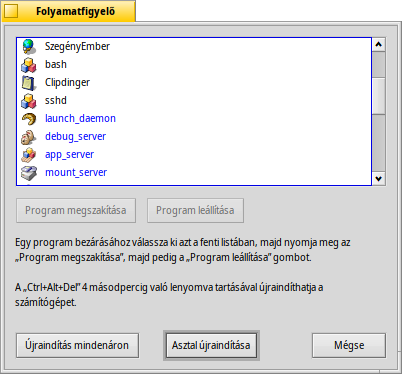

Folyamatfigyelő (Team Monitor)
A CTRL ALT DEL lenyomásával előhívhatjuk a Folyamatfigyelőt, ami megmutatja az összes futó programot és azok állapotát.
A rendszerfolyamatok kék színnel vannak megkülönböztetve a fekete felhasználói folyamatokatól/programoktól.
Azok a programok, amik nem válaszolnak, vélhetőleg programhiba folytán, azok piros színnel jelennek meg. Meg lehet próbálni bezárni a programot, ha a kiválasztás után lenyomjuk a gombot (vagy a DEL vagy a Q lenyomásával). Ha ez nem működik, akkor használjuk az gombot (vagy a SHIFT DEL vagy a K billentyűt).
A Terminál is előhívható a OPT ALT T billentyűk lenyomásával.
Ha a Nyomkövető vagy az Asztalsáv futása leáll, akkor alul megjelenik egy újabb gomb is (előtte persze le kell állítani az adott programot): , ami újraindítja a Nyomkövetőt illetve az Asztalsávot.